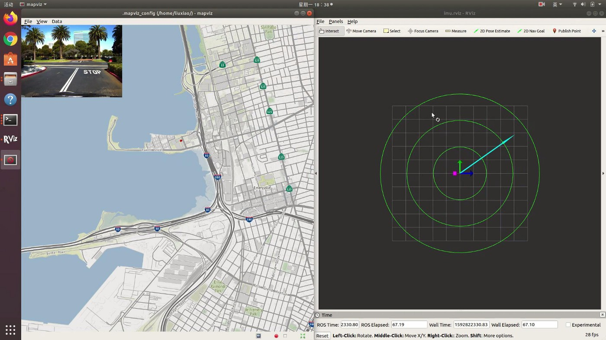
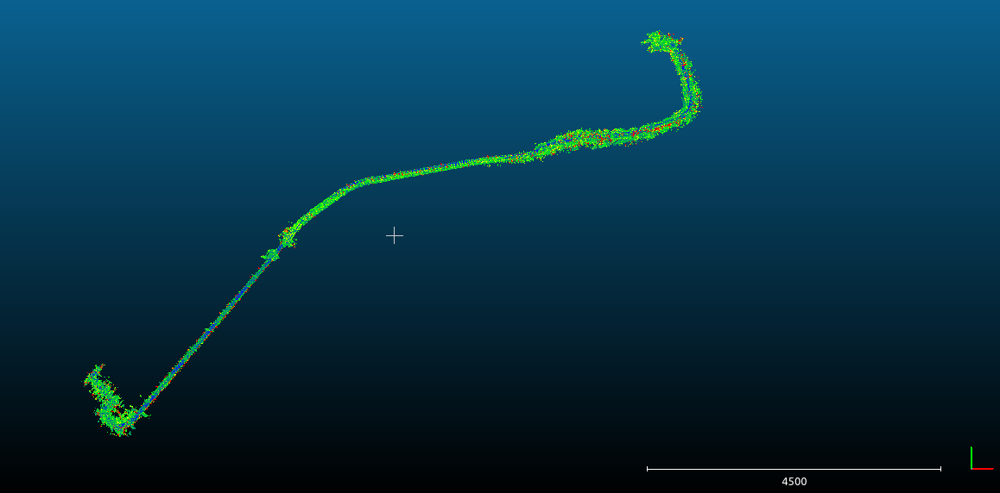
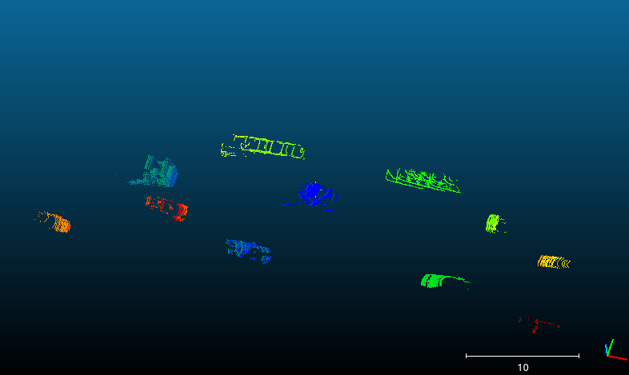
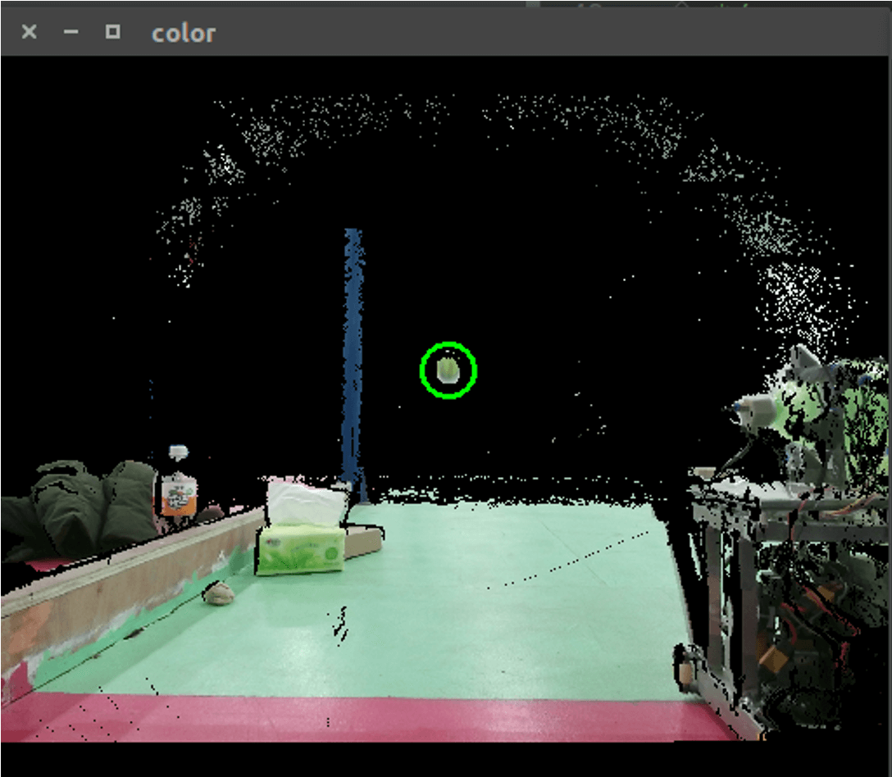

About
Robotics Engineer & SLAM Researcher.
I am currently a senior student in Harbin Intitute of Technology. My major is automation and my minor major is Data Science. Now I work as a research assistant at Mechanical Systems Control (MSC) Laboratory, UC Berkeley. At the same time, I am a member of the vision group at Harbin Institute of Technology Competing Robot Team (HITCRT).
- Education: Harbin Institute of Technology
- Graduation: 2021 Fall
- Major: B.Eng in Automation
- Minor: B.S in Data Science
- Phone: +86 17355202618
- WeChat: Lx_19990916
- E-mail: hitlx916@gmail.com
- Address: No.92 Xidazhi Street, Harbin
Research Interest
My research interest includes sensor fusion, 3D mapping, and deep learning. I particularly want to do some further research about perception system for robots and automotive cars.
- Robotics
- SLAM
- Automative Car
- Sensor Fusion
- 3D Reconstruction
- Deep Learning
Resume
Click here to download my full CV.
Education
B.Eng. in Automation
Aug 2017 - Present
Harbin Institute of Technology
GPA: 3.81/4.0
Robotics, Pattern Recognition, Control Theory
B.S in Data Science
Aug 2018 - Present
Harbin Institute of Technology
GPA: 4.0/4.0
Algorithm, Computer System, Distributed System
Research Experience
Research Assistant
May, 2020 - Present
MSC Lab, UC Berkeley
- Visualized GPS, acceleration, and orientation information of the automotive vehicle.
- Removed all dynamic objects in point clouds to build a static map
- Detection and tracking of the vehicles
Robotic Vision Engineer
Aug,2019 - Present
HIT Competing Robot Team
- Developed a detection system to predict the trajectory of the football.
- Automatic aiming system for robots.
Research


Reconstruction 3D Static Map
Re-project LIDAR point clouds to the six panoramic camera frames and remove all dynamic objects (cars, pedestrians, etc) by instance segmentation. Then convert GPS and IMU information from ROSBAG to rotation and translation matrix to build a static map.

Detection and Tracking of vehicles
Dectecion and tracking vehicles in different complicated environments.

Detection System for Robocon
Use Background modeling method (MOG) to get the trajectory of football (PCL) and calculate the drop point with Azure Kinect. The deviation of result is less than 5 centimeters.

A Maze Solving Robot
Built a robot based on ARM microcontroller with line, bump and IR sensors to detect the environment. Design a C++ program based on detection results to plan the action which can effectively avoid obstacles.